Editor
Approved application · approved logoEvery image below is an actual canonical PNG. Open an image for its full resolution. These are authored design scenes, not current-app browser captures.
Block type choices
block-types-1Actions and implementation pointers
× · Text · Heading 1 · Heading 2 · Heading 3 · Heading 4 · Heading 5
apps/web/src/components/editor/document-toolbar.tsxpackages/better-editor/src/engine/suggestions.tspackages/better-editor/src/ui/context-menu.tsx

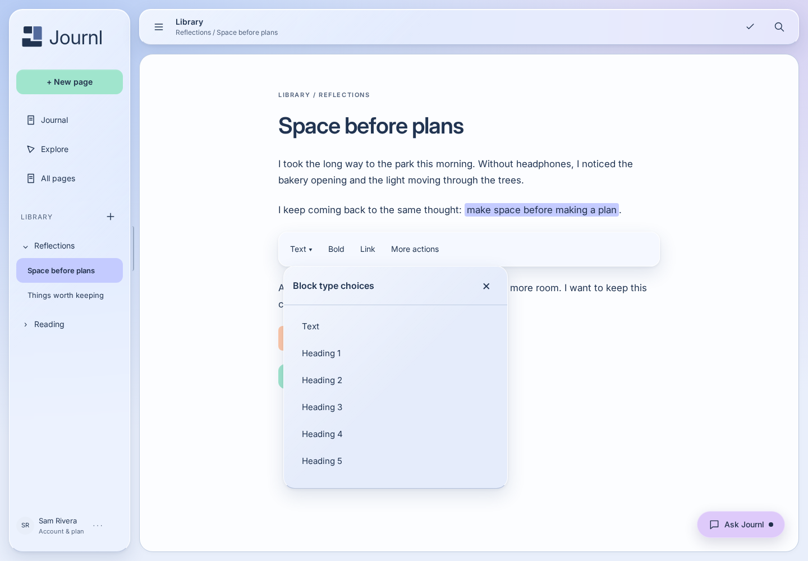
SHA256 3825c3f9147217ae929874045541d5a60f28358f77d5170caf5723874b3725fc

SHA256 64f8bdd600501b128aa50f26c7dbc36b63cf47f82dc5fcf4b6fb84616c620f53

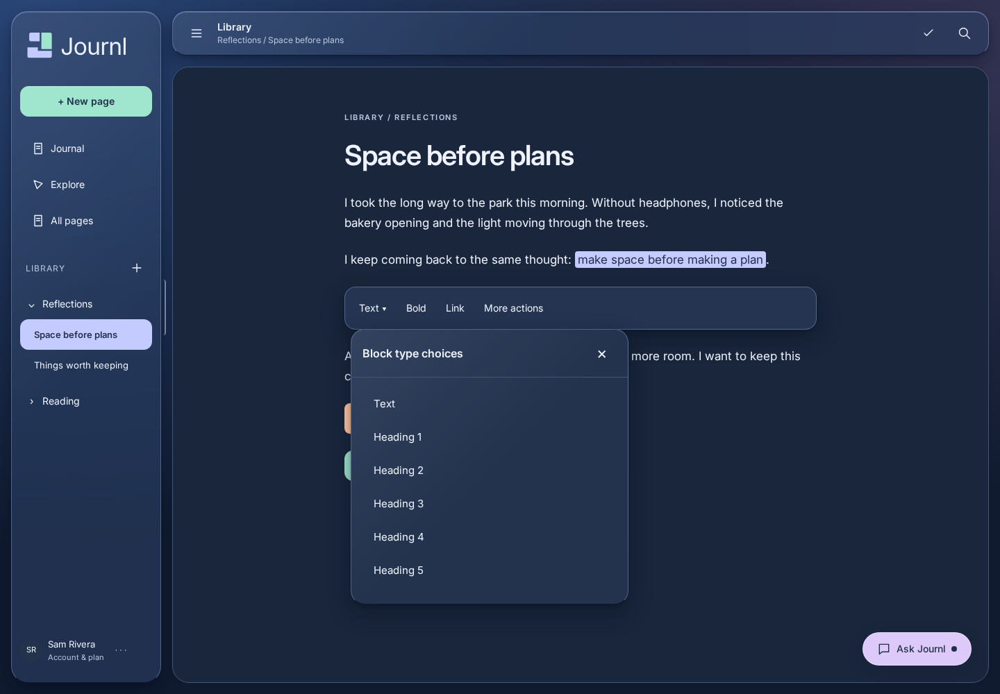
SHA256 bf1450ffc3a790d84329ec1d5cb40b5c6b6ee6cbee088cdcf5b6060e9582fd95

SHA256 582ffed847e327b342cfa543db97548eccd3c3a8c2f5afbfd80d49dfc276134c
Block type choices
block-types-2Actions and implementation pointers
× · Heading 6 · Bullet list · Numbered list · Checklist · Toggle list · Toggle heading
apps/web/src/components/editor/document-toolbar.tsxpackages/better-editor/src/engine/suggestions.tspackages/better-editor/src/ui/context-menu.tsx

SHA256 445e4c97013e7896acdfd57e3b74bda7ae1d5e74b384efd31df90ec247990619

SHA256 5be9dea02a8f35755f88bee070d875bc4c20037f045ff497a4f6b21e2614d4bc

SHA256 c1cfc76d0929f18aa98a4ac704da20aac4955f747f4c90e349d4c12a2fa9a4d8

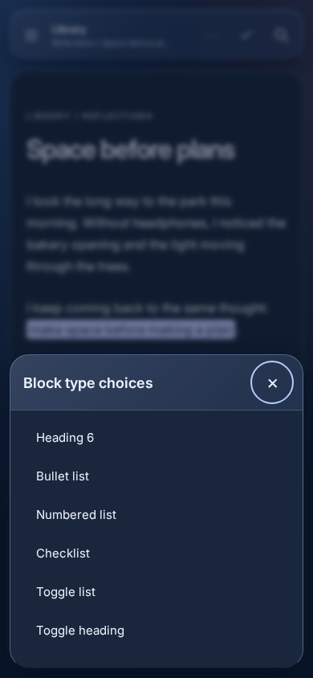
SHA256 6759d874713f53984766849e0e63a351f2238adc9f56b2813a803244949c952c
Block type choices
block-types-3Actions and implementation pointers
× · Quote · Code · Divider · Table
apps/web/src/components/editor/document-toolbar.tsxpackages/better-editor/src/engine/suggestions.tspackages/better-editor/src/ui/context-menu.tsx

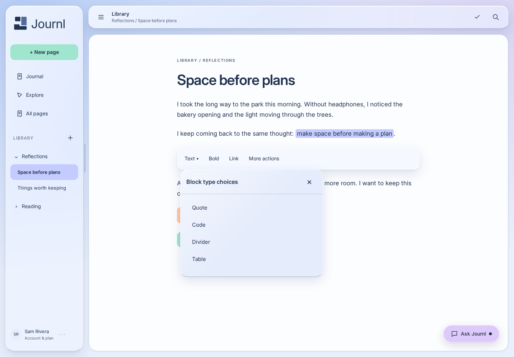
SHA256 f076d0451516eab174ccfe376cc39abb752f6b9fdceaaa34c31c081c1df42bb0

SHA256 a46967bd7943417b7f54bac39d0379e731d34e8af6113538c47a088b95670017

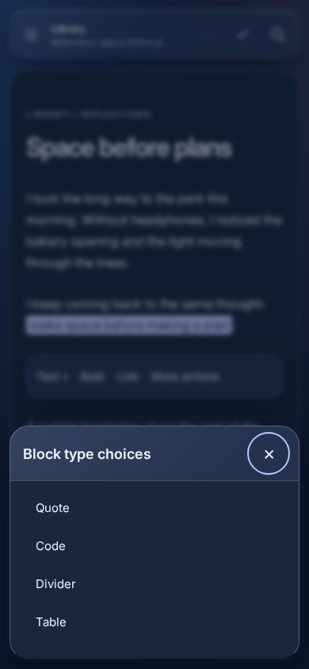
SHA256 0c8ccf0a1da0b8ed73d6217144a31cbf639844a1d9726442861601f98a2f73eb

SHA256 a4fac25e6db6eca1a8ff19ba42b95f5d7d15751ae6c50c698e3c1f4e0e7a6bf6
Content · text
block-textActions and implementation pointers
+ New page · Journal · Explore · All pages · ⌄ · Reflections · › · Reading · Ask Journl · Today’s Journal · Close · Instant · Thinking
apps/web/src/components/editor/document-toolbar.tsxpackages/better-editor/src/engine/suggestions.tspackages/better-editor/src/ui/context-menu.tsx

SHA256 12cd9b7275dd7faa1d3257d97539fb9977511b945aa2a1e1b3d3b005c1c1e668

SHA256 b942f67da2acb11b7bba6c8d60ed15c0dfd844e1367765b30fac4beb4fe75770

SHA256 434084c6d988d8e2811c078787e6c5652c237064c4b551d3aa31902408f59309

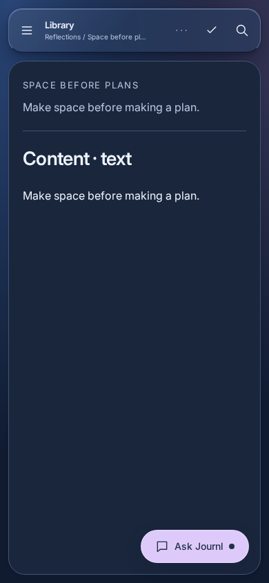
SHA256 000c68024cde5c98dab138313fff8ba9d33373add1863e4c8e11ea09d7908b43
Content · headings
block-headingsActions and implementation pointers
+ New page · Journal · Explore · All pages · ⌄ · Reflections · › · Reading · Ask Journl · Today’s Journal · Close · Instant · Thinking
apps/web/src/components/editor/document-toolbar.tsxpackages/better-editor/src/engine/suggestions.tspackages/better-editor/src/ui/context-menu.tsx

SHA256 184c1320d6feeda710fa7792f1591a73b3124a81985bd4e5b1cd104071ab96c9

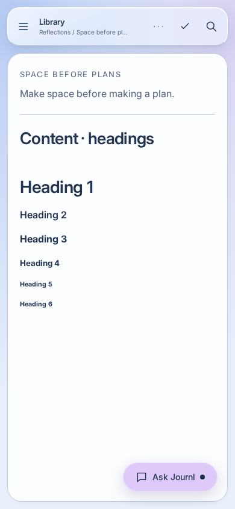
SHA256 b5732e8db4f23b6459b57319c409596b800c58de629e805bb5c2bd547e7e731f

SHA256 9e60d63e20ba5ef44edc322792c3d676ee986e2f500cb173b8bafc0c5d8c28e2

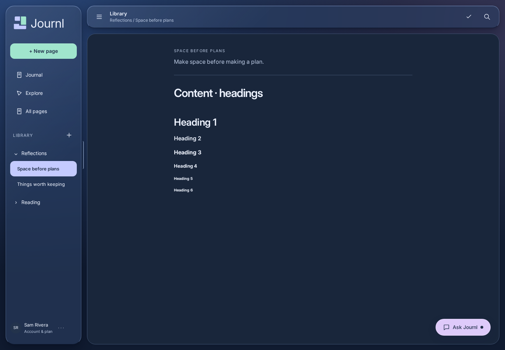
SHA256 8f8c55524d672828bbf9f5b4fe7b80614d99b956cd7a04c6248494ed18a0b313
Content · lists
block-listsActions and implementation pointers
+ New page · Journal · Explore · All pages · ⌄ · Reflections · › · Reading · Ask Journl · Today’s Journal · Close · Instant · Thinking
apps/web/src/components/editor/document-toolbar.tsxpackages/better-editor/src/engine/suggestions.tspackages/better-editor/src/ui/context-menu.tsx

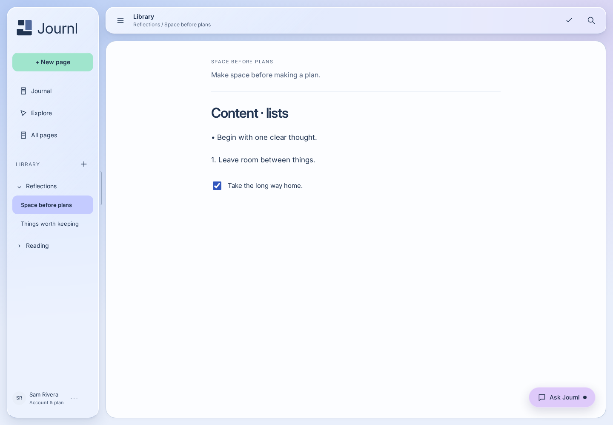
SHA256 342f12dbb0009bfb221f4fc3d59c127c632037bc9854c779a8c8810dbc6c971f

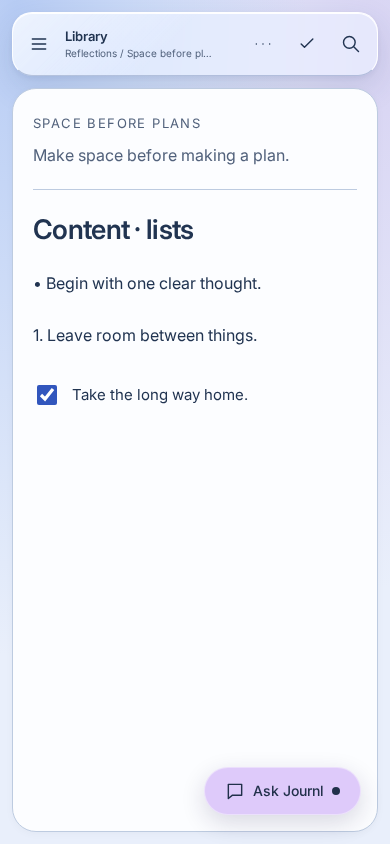
SHA256 8db0631c66b778e24fbff87dd475506bcdfd4dcf6b4b7d81a632da8c535919e5

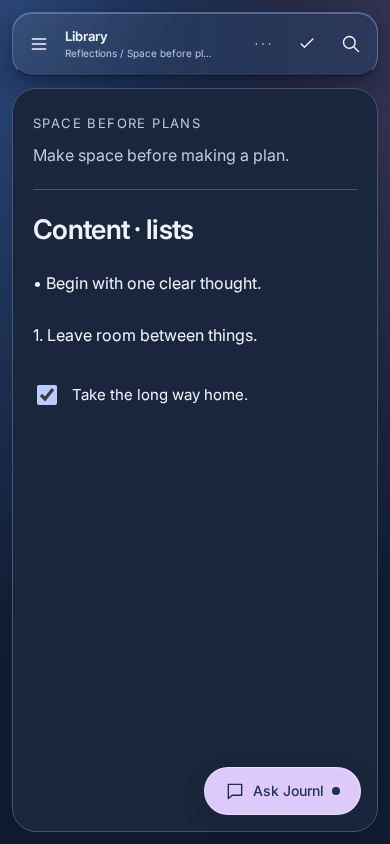
SHA256 afeab4d317ae50220bc7a2a1f256a0c59c95d13adb6349af45db453051e86fc0

SHA256 d3627ccda22a17e03cbaaad8053f1ec5c4c0f1d31a824481eb979eef48da00dd
Content · toggles
block-togglesActions and implementation pointers
+ New page · Journal · Explore · All pages · ⌄ · Reflections · › · Reading · Ask Journl · Today’s Journal · Close · Instant · Thinking
apps/web/src/components/editor/document-toolbar.tsxpackages/better-editor/src/engine/suggestions.tspackages/better-editor/src/ui/context-menu.tsx

SHA256 71573cf1c2fd9d59e7befb929dd5a3977bd63be82379b815df310b3a64127b66

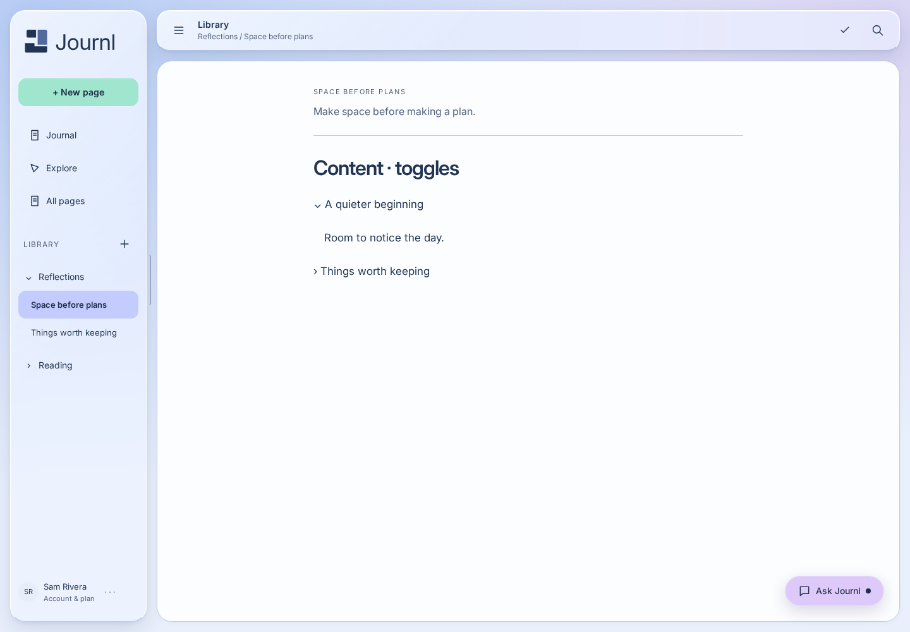
SHA256 7e2a35160f1a69178b13338b304e79fcd3c477ae1d7d0017222685e3f7c85a43

SHA256 23747320390b317a897d57b009021205e122aac3baa36bfb69e4df1a6ca27303

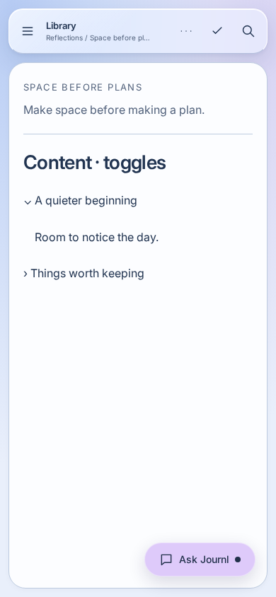
SHA256 bf36650f0db9cd80fdada04060d0850d301b3fc526c076ef68965bfad0a69fdb
Content · quote
block-quoteActions and implementation pointers
+ New page · Journal · Explore · All pages · ⌄ · Reflections · › · Reading · Ask Journl · Today’s Journal · Close · Instant · Thinking
apps/web/src/components/editor/document-toolbar.tsxpackages/better-editor/src/engine/suggestions.tspackages/better-editor/src/ui/context-menu.tsx

SHA256 073a4adf24f7e2327667a9369310f56573bf5e2c41f5edf8c64adf362b939a3b

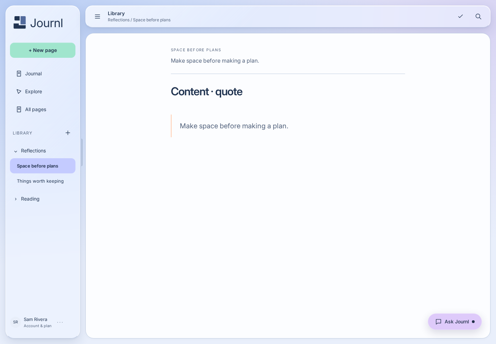
SHA256 1d67969ce68586783f2448227feedbdb36c4657baf948835fd63cad8e70cdb4f

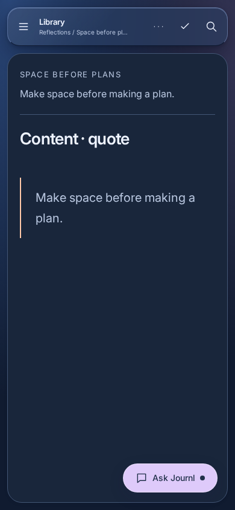
SHA256 fd0f8ce2179a2348c1641edcee22e97e5fdbc09ff8d510a345453a0418c86d8b

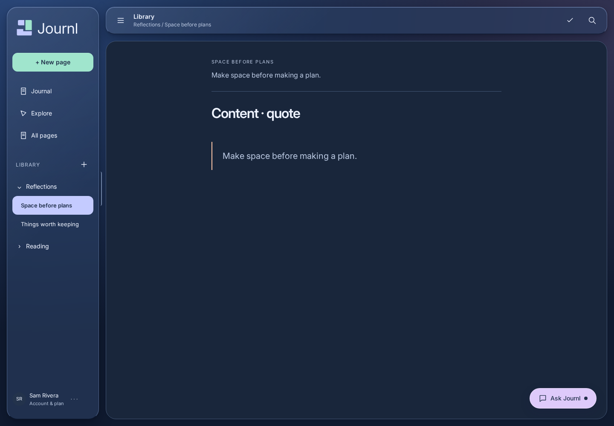
SHA256 694983ba7d03e19d2f3dc96ad58378e89d578d1d336aa620939c59713a7b42b1
Content · code
block-codeActions and implementation pointers
+ New page · Journal · Explore · All pages · ⌄ · Reflections · › · Reading · Language: JavaScript · Ask Journl · Today’s Journal · Close · Instant · Thinking
apps/web/src/components/editor/document-toolbar.tsxpackages/better-editor/src/engine/suggestions.tspackages/better-editor/src/ui/context-menu.tsx

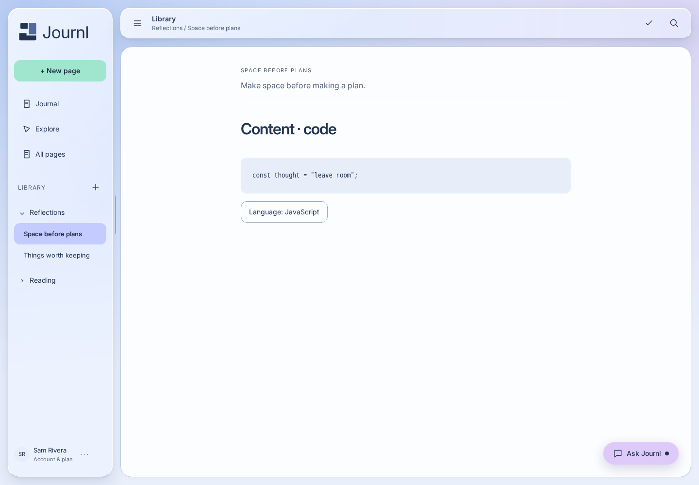
SHA256 dad2f5f1fa8da1df2f1774f97f1037442e516904fd9ecb572b8bceccc4d583c6

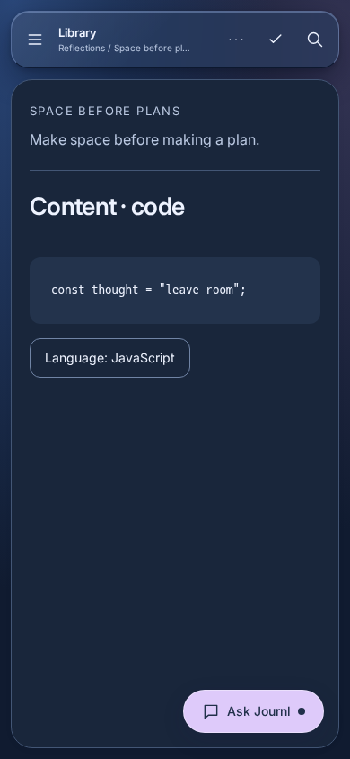
SHA256 642c34a38dc9bd286ad02d1042a282c6f313bf2b4271a983161c5392ec3c5340

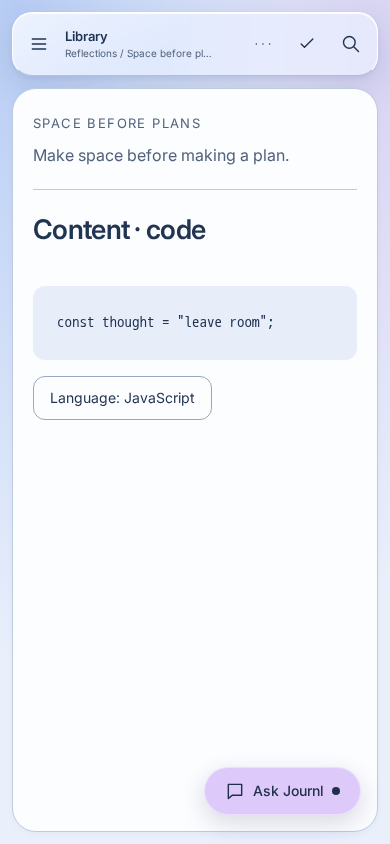
SHA256 ee0021dd75a53c8089e2acbb770cebdc5055fb30cc86e48e7ac06fad32157df7

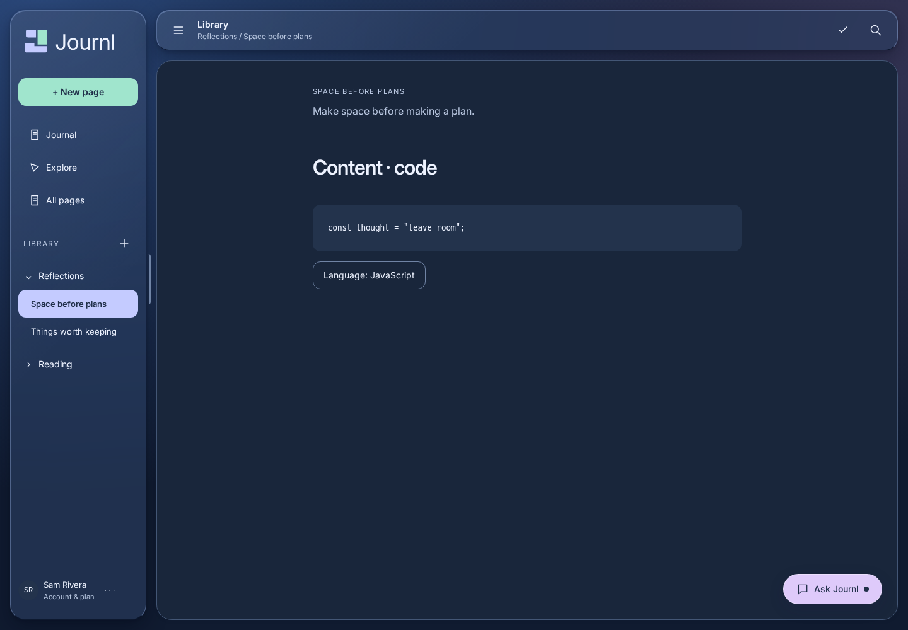
SHA256 aacde36b2316b30552cce58305fb2186bed935d39caf6faa51d330f41a5e033a
Content · divider
block-dividerActions and implementation pointers
+ New page · Journal · Explore · All pages · ⌄ · Reflections · › · Reading · Ask Journl · Today’s Journal · Close · Instant · Thinking
apps/web/src/components/editor/document-toolbar.tsxpackages/better-editor/src/engine/suggestions.tspackages/better-editor/src/ui/context-menu.tsx

SHA256 95155911a311d064d059d6936b31f7bad58cb8cb449f8f2e1fa04d239c2f0f2c

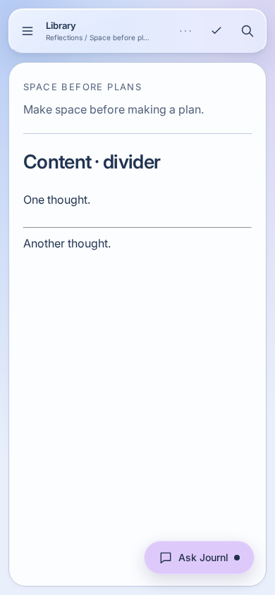
SHA256 2fd0e260a4a02521ab19457bf21581d0c48127c00515a832a469521cdfcd2110

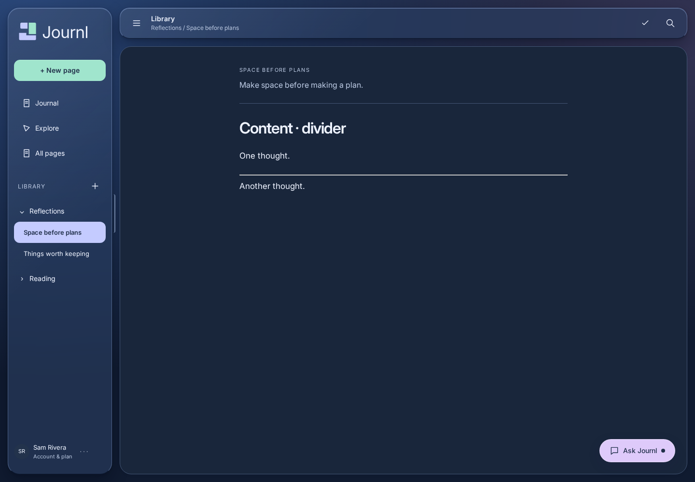
SHA256 8a6c00c0cf6a7f0cde39ef47ba49bf89053607d290d87fbd792a51920f20116b

SHA256 de26ffee3388e83e9eb2d7fe2aeae7e3b17b71594c3df41e1dad4ac67fea924e